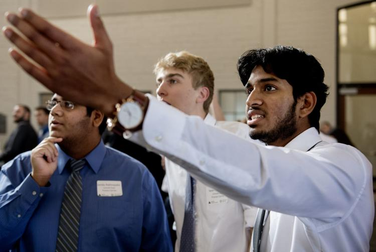
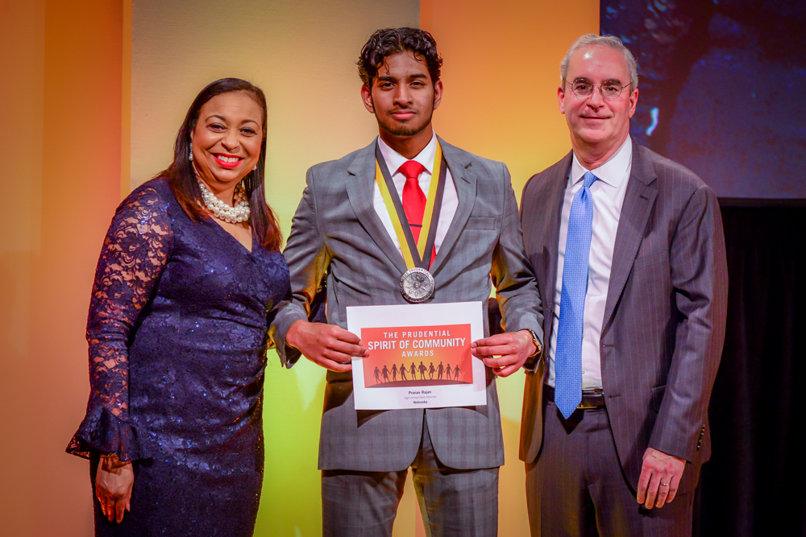

About Me
I’m currently a senior at Lincoln East High School in Lincoln Nebraska. At East, I participate in Science Olympiad, Varsity football, and Future Business Leaders of America. Academically, I enjoy studying computer science and educational policy. Over my high school career, I have designed and implemented a nonprofit organization called CodeForChange to bring attention to the lack of proper computer science education in rural America.
Today, CodeForChange is an international organization that exposes students to the topics of computer science and entrepreneurship through modern teaching strategies. I currently serve as the executive director of CodeForChange and continue to run summer and academic year projects/programs for students. My goal is to spread the opportunity CodeForChange offers all over rural America while collaborating with like minded students.
Pranav now serves as the executive director of CodeForChange and continues to run summer and academic year projects/programs for students. His goal is to spread the opportunity of CodeForChange throughout the Midwest, while collaborating with other students interested in similar causes.
Future
I am seeking an undergraduate Masters degree from a four-year institution after my high school graduation. To do this, I am seeking a degree in Computer Science and Education. From there, I would like to start my own software development company or work for a start-up in Silicon Valley. Throughout the rest of my high school career and college, I would like to continue to better science education for students and create interdisciplinary STEM opportunities.
School Extracurriculars
Founder and President of Lincoln East Value Investment Club | September 2017 - Current
The Lincoln East Value Investment Club, the first Investment Club in the state of Nebraska, operates virtually in three different schools and recently placed first at the past state-wide investment competition through Junior Achievement. After competing in and winning my first virtual investing competition in 8th grade, I was hooked onto financial investing at a very early age, however financial opportunities in Nebraska lacked to such young aspirers. Fueled by my win, I continued to pour hours of research into stocks, bonds, and financial stability; this research was transformed into an investment club with the goal of bringing financial education to yearning students such as myself.
Reporter & Community Outreach Director for the Lincoln East Future Business Leaders of America | May 2018 - April 2019
Published a variety of articles regarding leadership, communication, and business skills in a state-wide newsletter. I also led activities to better our school’s environment by presiding the organized Community Outreach Committee.
Captain of Lincoln East Science Olympiad | May 2017 - Current
Led the East Science Olympiad team to place 2nd at Science Olympiad State Competition three years in a row. I was a finalist and a state champion in at least one of my events every year. Science Olympiad initiated my interest in chemistry and earth sciences. By showing me the applications of these subjects, Science Olympiad gave me new passion in the sciences. My experiences from this club has led to a variety of unique life opportunities such as my internship at NASA.
Member of the Lincoln East National Honor Society | April 2019 - Current
Accepted into the Lincoln East National Honor Society by attaining 3rd class rank out of approximately 600 students. Currently lead a variety of community service projects, such as blood drives and community clean up operations. The NHS organization provides me with opportunities to apply my leadership and coordination skills to real, impactful projects to my local community and school.
Lincoln East Varsity Football | Receiver/Corner | August 2019 - Current
Lettered with Academic Honors on Varsity football as a receiver and corner. Playing football has already taught me to reform my definition of success. I am the only Indian football player for the 2019/2020 season and one of the few Indians to ever play football in Nebraska.

Lincoln East Varsity Mens’s Tennis : Captain | August 2018 - September 2018
Captained the JV team to a city championship while simultaneously while swinging up to play on the Varsity team. Executed the responsibilities of leading the team, communicating to individual team members, and keeping team morale high. Attained academic & athletic honors. Competing on two different teams, simultaneously, was an eye opening experience. I played vastly different roles on JV and Varsity, however, still had responsibilities that I had to fulfill. I learned to adapt and serve different roles.
Website Design Club : Vice-President, Co-Founder | August 2017 - May 2017
Structured and oversaw a school-affiliated website consulting services for local nonprofits and businesses. My role was to find other clubs and institutions that required new websites. Marketing and student recruitment is one of the biggest hurdles for all new clubs. Technology has enabled individuals and institutions to have an online presence; the same opportunity should be exploited by passionate school clubs. In order to provide these clubs with a boost, I led a team of web developers to create websites for clubs
Lincoln East Speech and Debate : Member/Competitor | August 2016 - May 2018
Competitor at weekly tournaments and placed first out of 50+ competitors at multiple tournaments. Speech and Debate built my confidence and social skills. Participating in weekly competitions showed me the most effective and efficient communication methods. I will continue to use these skills for the rest of my life.
Non School Extracurriculars
CodeForChange | Founder/Executive Director | December 2017 - Current
Founded an international computer science education organization that exposes students to computer science through experiential learning. As president and executive director of the organization, I also partnered with Youth Entrepreneurship Clinics to attain grant funding of ~$500,000 from USDA for five years of rural project use and formulated virtual CS curriculum accessible to international interns. CodeForChange has given 70+ high school students, in India, South Africa, and America the opportunity to learn, practice, and apply programming skills to socially impactful projects. As I provided students with opportunities to apply school taught practices, I discovered the potential of problem based learning pedagogies.
Engineering Intern | NASA | June 1st 2019 - July 27th
Selected from a nationally competitive organization, out of 600 students, to research at NASA via the Texas Space Grant Consortium and The University of Texas at Austin Center for Space Research Summer Intern Program Researched emergency/flood preparedness in order to benefit my home state which has been greatly impacted by flooding. Analyzed the effect of the Bastrop County Fire upon vegetation regrowth and crossapplied the study findings to other fires via the QGIS software.
Environmental Research and Development Intern | LI-COR Biosciences | May 2019 - September 2019
Researching carbon dioxide assimilation and fluorescence of plants with the goal of exploring antibiotic and carbon sequestration applications of Lemnoideae, also known as duckweed, the fastest reproducing plant in the world. Identifying and confirming the deactivation of the RUBP 6-Carbon molecule in the carbon assimilation process and modeling the effect of this deactivation upon user data.
Youth Adviser to Governor Pete Ricketts
Using my background of running an international computer science organization and educational standards to work alongside the governor with the goal of influencing educational policy decisions, substantiate educational standards, and enforce the use of more effective educational pedagogies. I researched and presented educational reforms to provide more opportunities to rural students.
Mechanical Engineering Intern | University of Nebraska - Lincoln | June 2019 - September 2019
Applied MATLAB to large datasets to analyze images and numerical values with the goal of solving the widespread lensing fog issue present in 3D printing and manufacturing.
Congressional Intern | United States House of Representatives | May 2017 - Current
Managed communications between constituents and Congressman Fortenberry via social media and the production of tweets to convey congressional updates to the Congressman 22,000 followers. I also wrote weekly newsletters about government issues read by 50,000+ constituents
Software Developer Intern | University of Nebraska - Lincoln | September 2017 - May 2018
Utilized the programming language ’R’ to create algorithm based simulations and virtual curriculum, used in Nebraska high schools to assist teachers and students in conceptualizing the subject of Aquaponics.
Clark Jeary Retirement Home | Technology Specialist Volunteer | July 2017 - September 2018
Taught ~15 retirees weekly regarding modern technology and proper usage of the internet via running regular technology classes and developing tech curriculum
Founder of Cavett Elementary Chess Club | August 2015 - May 2015
Established a chess club from scratch with the goal of increasing students exposure to throughout the district of Lincoln Public Schools.
Lighthouse After School Program | Volunteer | November 2017 - March 2018
Tutored underprivileged students ranging from 3rd grade to 12th grade
Youth Leadership Lincoln Class of 21 | Selected Board Member | August 2018 - May 2019
Led a variety of successful community projects throughout Nebraska high schools and communities through.
Primary Instructor | Kumon Math and Reading Center | June 2013 - September 2017
Tutored over 500 students in math and reading in order to advance students through the Lincoln Kumon curriculum in preparation for standardized testing and school
Swanson Tae Kwon Do | Instructor | November 2011 - November 2013
Communicated the principles, values, and fundamentals of Tae Kwon Do to black-belt aspiring students. Educating students regarding the foundational theories of Tae Kwon Do showed me the impact martial arts can have on the lives of young individuals by providing them with self-defense skills.
Awards
Daily Points of Light Award | June 2019
Honored by a worldwide nonprofit organization, founded by George Bush, that seeks to expose volunteer projects initiated by local community individuals.
Prudential Spirit of Community Award | February 2019
Nebraska’s Top High School Youth Volunteer of 2019 by United States largest youth volunteer recognition program.
The Pledge Publication | February 2019
Published 3 articles about leadership, applying school-taught skills, and project development in the Nebraska Future Business Leaders of America newsletter read by 10,000 students and teachers.
Presidential Gold Volunteer Service Award | March 2019
Honored by the President of the United States for founding CodeForChange.
Highest Investment Portfolio Value at Nebraska JA Stock Market Competition | November 2018
Achieved the largest increase in portfolio value through a multitude of strategic investments and placed first at a statewide investment competition with over 100 teams.
Congressional Bronze Medal of Service | November 2018
United States Congress Honoree as dedicated community volunteer for contributing 600 educational volunteering hours for various local, low-income educational institutions.
Selected TEDx Talk Speaker | August 2018
Selected as a speaker to give a TED Talk on Computer Science Education in front of 500+ person audience
Computer Science Education | Pranav Rajan | TEDxYouth@Lincoln
College Board AP Scholar with Distinction | May 2018
Scored three or higher on four AP Exams
Future Business Leaders of America National Qualifier | April 2018
Qualified for the FBLA National Leadership Conference representing Nebraska in the Securities and Investments event.
Nebraska Science Olympiad State Champion | May 2017
Placing in the top six within Nebraska, in 10 events, over Nebraska State Science Olympiad Competitions, with two first place state champion awards.
Second Degree Black Belt | May 2014
I attained the rank of second degree belt after 7 years of TaeKwonDo training.
pranavrajan10@gmail.com